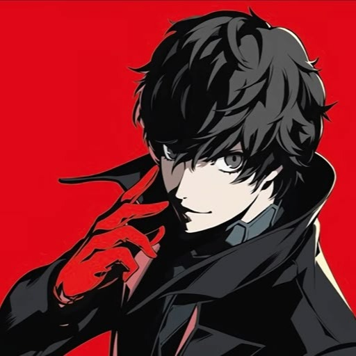

Why persona 5 is goated af?
Let’s get it straight, Persona 5 isn’t just a game. It’s a full blown lifestyle. A religion. A cultural reset. A spiritual awakening. If this game were a person, I’d propose on sight and take them to a rooftop ramen date while “Beneath the Mask” plays in the background and rain dramatically rolls down the window. But i digress. Let me break down for you why the game is goated af.
-
The aesthetics of the game
Bro. The UI alone deserves an Oscar. No game should be allowed to drip this hard. Opening the menu screen feels like a fashion runway in Milan. Red, black, white? ICONIC. You ain’t playing the game, you’re vibing through it with jazz fusion and typewriter fonts like a smooth criminal in a school uniform. Also shoutout to that “hold up” animation where Joker pulls out the blicky like he’s on a mixtape cover. Man could rob me and I’d say thank you.
-
Dont even get me started on the music
Lyn Inaizumi, wherever you are, I hope you're hydrated and blessed because your vocal cords have done more for me emotionally than therapy. Every track slaps. Every. Single. One.
- Last Surprise: turn-based combat got me dancing mid-fight like I’m about to stab a shadow with rhythm and soul.
- Life Will Change: revolution.mp3
- Rivers in the Desert: when the boss fight hits so hard you suddenly know how to believe in yourself. Put this OST on while washing dishes and suddenly you're overthrowing capitalism at 2am.
-
The goated plot
It’s not just vibes, it’s DEEP. Persona 5 really said “what if teenagers committed magical crimes to fix systemic corruption?” and made it WORK. They got high schoolers out here fixing broken adults like it's a side quest. Palaces = mental fortresses built from evil. You don’t just defeat the villain. You enter their subconscious, steal their twisted heart, and yeet it into morality. Psychology professors WISH they could explain cognition like this.
-
THE SQUAD IS FUCKING STACKED
Joker:
Silent? Yes. Emotionless? Also yes. Fashion icon? AB-SO-LUTE-LY. This man pulls up in every scene like he’s about to drop a 30-minute TED Talk with zero words and still win over the crowd. This boy got expelled from his last school for committing the crime of defending a woman, then just rolled into Tokyo like, “I’m about to overthrow society in my free time.” Lives in a dusty attic. Owns zero furniture. Still somehow gets every girl in a 20-mile radius SIMPING. You ever seen a man dodge bullets with a twirl? That’s him. You ever seen a man throw a card and summon Satan like he’s picking which UNO reverse to use? That’s him. Joker is the type of dude who’d be like “we should split up to cover more ground” and then solo an entire palace while you’re stuck in a cutscene crying. He could be on fire and still have time toadjust his gloves. The anime gave him glasses and vibes and said, “Yeah, he’s THAT guy.”
Ryuji:
Ryuji is that chaotic golden retriever energy you didn’t know you needed. He talks like a middle schooler who just learned curse words, but fights like your older cousin at a house party after one Red Bull. His battle cry is literally, “YO SKULL, RAGIN’!” and you just KNOW he hits people with a folding chair in Smash Bros. His backstory? Former track star turned high school outcast because he had the audacity to stand up to an abusive coach. That coach? A WAR CRIMINAL IN SHORTS. Ryuji said “nah, violence is cool when I do it for JUSTICE,”. His hair is like he bleached it during a breakdown and never looked back. Absolute king. If loyalty was a person, it’d be Ryuji yelling “HELL YEAH BRO, LET’S KICK THEIR ASS!!”
Morgana:

Is he a cat? Is he a guy? Is he a cursed Tumblr gif? Doesn’t matter. What matters is this boy will nag you like your mom at bedtime, call you a dumbass, and then heal your entire party with a smile. Morgana walks like a PNG in real life. Has the voice of someone who would sell you essential oils in a back alley but also risk his life for your GPA. He’s mysterious, smug, full of secrets and 100% definitely has no idea what the hell he actually is. Man’s going through a spiritual crisis but still finds time to turn into a bus. A BUS. He’ll call you “joker” like it’s the last word you’ll ever hear before being assassinated. Also: he’s a cat who wants to date Ann and I’m still not okay with that.
Ann:

Ann is that friend who looks like she could ruin your life but would actually sit with you when you’re crying on the subway and hand you Pocky. She’s half American, all drama, and 110% certified BAD BITCH. If you call her a “foreign chick” she will DESTROY you zero hesitation with a flying leg kick. Her Phantom Thief outfit? Bro, she shows up in red latex and a whip like she came from a fashion forward BDSM dungeon and somehow STILL manages to be a softie. Iconic. She could be posing for Vogue while simultaneously drop kicking a Shadow in the throat. Also, lowkey the only one in the group with enough emotional range to go from "I'm sad and I need love" to "LET'S BURN DOWN HIS ENTIRE PALACE" in the same scene. She’s not just a pretty face, she’s a revolution wrapped in lip gloss.
Yusuke:
Yusuke is what happens when you give an eldritch Victorian cryptid access to a paintbrush and a metro pass. He’s not just weird, he’s performance art incarnate. Man speaks like he swallowed a thesaurus written by Shakespeare while floating in a koi pond. You ask him how his day is and he’ll be like: “The ethereal nature of morning dew contrasts sharply with the emptiness of my ramen packet.”... Bro. Yusuke is the kind of guy to say “aesthetically pleasing” while watching raindrops hit trashcans. He stares at pigeons like they’re renaissance muses. He zones out in the middle of conversations to admire ceiling tiles. You could be bleeding out and he’d go, “The crimson hue of your wounds... remarkable.”
Makoto:
Makoto out here doing calculus in her head mid fight. While the rest of the Thieves are throwing hands, she’s calculating Shadow weakness, power grids, and whether or not you remembered to do your taxes. At first glance: “Oh no, she’s the serious nerdy one who’ll get mad if I’m late”. Reality: She’s riding a literal motorcycle Persona that rivals a tank and will absolutely commit a felony if it means justice is served. Makoto is the only person alive who could make a leather biker jacket and a report card look like the two ends of the same deadly weapon. You think she’s a rule follower? Wrong. She’s a rule breaker with a license to do algebra and snap necks. She once punched a god in the face. She once interrogated the police. She once looked at Ryuji and visibly aged 3 years. Mom friend energy? Absolutely. But also don’t cross her or she will lock you in a spreadsheet and sort your death by date.
Futaba:
Futaba has never touched grass in her life, but she has hacked into the Pentagon by accident and made it look easy. Socially anxious genius gremlin who lives in a blanket fort, eats nothing but junk food, and still manages to be 10 steps ahead of everyone in every scene. Her Persona is a literal UFO. She doesn't fight physically because why would she, when she can just DESTROY YOUR ENEMIES FROM THE BACK END LIKE A SASSY ORACLE OF DESTRUCTION? Futaba’s entire vibe is “feral raccoon with a genius IQ.” Her idea of a good time is running penetration tests on a megacorp’s firewall while sipping Big Bang Burger through a bendy straw. She calls people “normies” and says “let’s roll” like she’s on Tumblr in 2012 and I LOVE HER FOR THAT. She will trauma-dump, then immediately start quoting anime. She is the internet embodied, and the only time she’s not speaking fluent chaos is when she’s asleep... which is never.
Haru:
She looks soft. She talks soft. But this girl shows up to the squad with a GRENADE LAUNCHER in one hand and a BATTLE AXE in the other. Haru will say “I made tea” and then commit murder without blinking. She is the equivalent of a porcelain doll possessed by the spirit of a Spartan warrior. Her nickname is literally “Beauty Thief,” but make no mistake this chick is unhinged in the classiest way possible. You ever sip tea on a rooftop while plotting the emotional destruction of a corrupt businessman? Haru has. The real kicker? Her dad’s a billionaire CEO and she STILL said, “screw generational wealth, I’m joining this group of broke high school vigilantes to destroy capitalism.” She speaks like a Disney princess but hits like she’s training for Mortal Kombat. God-tier energy.